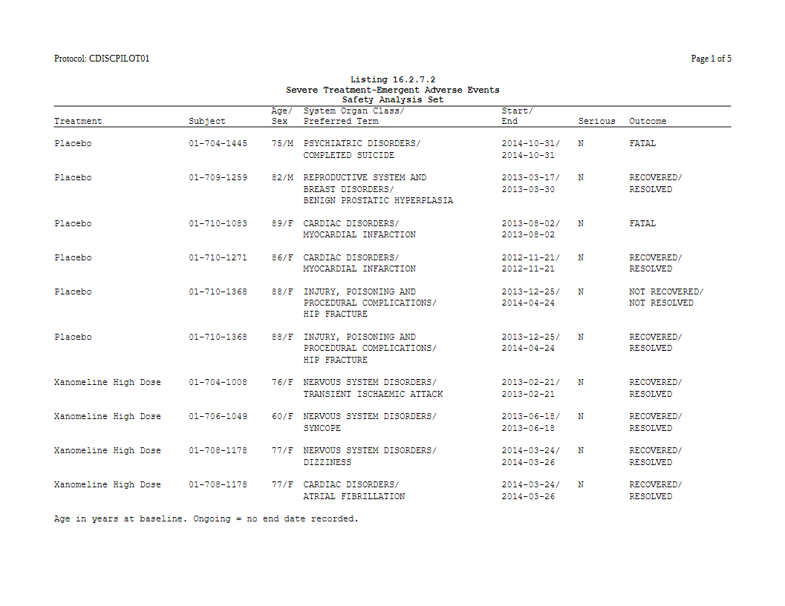

A listing is not built from an ARD. It prints records, one row of source data per subject or per event, so there are no statistics to fill in. A plan still helps. It uses the same verbs as a table for the pages, the blank rows, the style and the titles, so a report program that has tables and listings writes both the same way.
The listing machinery itself (listing_col(),
listing_spec(), wrapping, widths) is described in Listings end to end. This article shows how it
fits into a plan.
The records
Severe treatment-emergent adverse events from the CDISC pilot study, one row per event:
adsl <- pharmaverseadam::adsl
adae <- pharmaverseadam::adae
sae <- adae[adae$AESEV %in% "SEVERE" & adae$TRTEMFL %in% "Y" &
adae$SAFFL %in% "Y", ]
sae <- merge(sae, adsl[, c("USUBJID", "AGE", "SEX")], by = "USUBJID",
suffixes = c("", ".adsl"))
sae <- sae[order(sae$TRT01A, sae$USUBJID, sae$ASTDT), ]
sae$ASTDT <- format(sae$ASTDT, "%Y-%m-%d")
sae$AENDT <- ifelse(is.na(sae$AENDT), "Ongoing", format(sae$AENDT, "%Y-%m-%d"))
nrow(sae)
#> [1] 41The plan
table_plan() is handed the records as they are.
plan_listing() says it is a listing: its arguments are the
printed columns, each a listing_col(), plus
listing_spec()’s own settings. A column can combine several
source variables, joined by / and wrapped to its width:
p_body <- table_plan(sae) |>
plan_listing(
listing_col("TRT01A", width = 20, label = "Treatment", collapse_repeats = TRUE),
listing_col("USUBJID", width = 12, label = "Subject", collapse_repeats = TRUE),
listing_col(c("AGE", "SEX"), label = "Age/\nSex", layout = "flow"),
listing_col(c("AEBODSYS", "AEDECOD"), width = 30,
label = "System Organ Class/\nPreferred Term"),
listing_col(c("ASTDT", "AENDT"), width = 11, label = "Start/\nEnd"),
listing_col("AESER", label = "Serious"),
listing_col("AEOUT", width = 16, label = "Outcome")) |>
plan_blanks(where = "records") |>
plan_paginate_rows(max_rows = 36) |>
plan_style(border = "tfl")
p <- p_body |>
plan_titles("Listing 16.2.7.2", "Severe Treatment-Emergent Adverse Events",
"Safety Analysis Set") |>
plan_footnotes("Age in years at baseline. Ongoing = no end date recorded.")-
collapse_repeats = TRUEmarks a key column. Its value prints on the first line of a record and not on the lines a wrapped cell adds below it. If a record continues onto the next page, the value prints again at the top of that page. -
plan_blanks(where = "records")puts a blank row between records.first = TRUEwould add one at the top of every page too. -
plan_paginate_rows(max_rows = )counts physical rows, including the extra lines of wrapped cells, and never splits a record across pages. -
plan_titles()andplan_footnotes()put the same block on every page.
doc <- rtf_document(page = rtf_page(orientation = "landscape")) |>
rtf_section(secinfo = list(header = rtf_header(list(
c(l = "Protocol: CDISCPILOT01", r = "Page {PAGE} of {TOTAL_PAGES}"))))) |>
rtf_tables(p)
generate_rtfreport(doc, "l_sae.rtf", overwrite = TRUE)
length(plan_apply(p)) # pages
#> [1] 5
The same listing without a plan
The plan resolves to one as_rtftables() call. Written by
hand, it is:
spec <- listing_spec(list(
listing_col("TRT01A", width = 20, label = "Treatment", collapse_repeats = TRUE),
listing_col("USUBJID", width = 12, label = "Subject", collapse_repeats = TRUE),
listing_col(c("AGE", "SEX"), label = "Age/\nSex", layout = "flow"),
listing_col(c("AEBODSYS", "AEDECOD"), width = 30,
label = "System Organ Class/\nPreferred Term"),
listing_col(c("ASTDT", "AENDT"), width = 11, label = "Start/\nEnd"),
listing_col("AESER", label = "Serious"),
listing_col("AEOUT", width = 16, label = "Outcome")),
blank_row = TRUE)
pages <- as_rtftables(sae, listing = spec, max_rows = 36, border = "tfl")
all.equal(pages, plan_apply(p_body))
#> [1] TRUEThe two give the same pages. The comparison uses p_body,
the plan before its titles and footnotes, because the hand-written call
would pass those to rtf_tables() instead. Write it
whichever way suits the program. The plan has two advantages:
- The same verbs as the tables. A report’s page length, borders and titles are written the same way for a listing and for a table.
- A plan can be kept as a spec. tflspec saves a plan’s declarations to a workbook and builds the plan again from it, so the listing’s layout lives next to the tables’ in one study spec.
Checking the widths first
The widths above were picked by hand.
fit_listing_widths() works them out from the paper, the
font and the longest values. Pass it the records and the same columns
without widths, and paste the widths it suggests into
listing_col(width = ). See Listings end to
end.